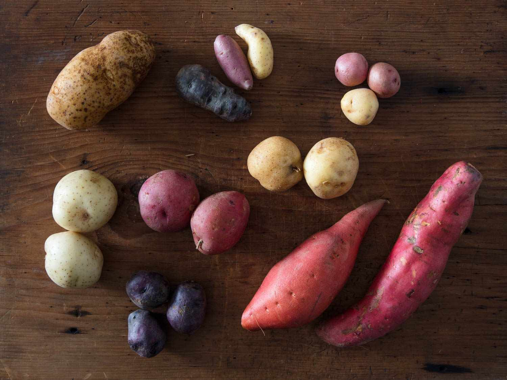

About potatoes
Potatoes are one of the most popular vegetables in the world. They are starchy edible tubers originating from the Andes mountains in South America. They come in thousands of variaties, being a good source of carbohydrates, vitamins and minerals.
Fun facts about potatoes
- Potatoes were the first vegetables grown in space.
- The largest potato ever grown was 5 kgs
- There are over 4000 variants of potatoes
Origin and history
- Potatoes originate from the Andes mountains in South America, where it was domesticated by indeginous people 8,000 to 10,000 years later.
- It was later spread by the Spanish to Europe in the 16th century, where it eventually spread to the rest of the world.
Common types of potatoes
- Russet Potatoes - ideal for baking and frying
- Yukon Gold - for mashing and baking
- Red Potatoes - salads and boiling

Back to main page